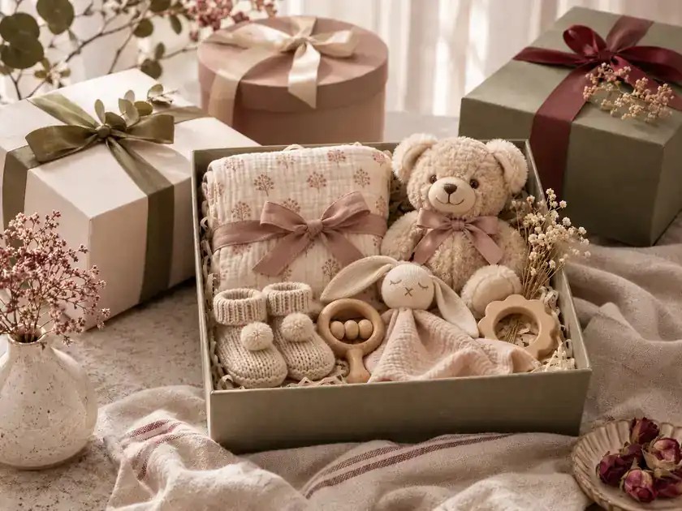

подаръци с отношение
Коледа, която
събира сърцата.Великден с
повече светлина.Любовта се
познава по жестовете.За нея.
С благодарност.Добре дошла,
Баба Марта.Малките неща
имат значение.
Красиво подбрани малки изненади за най-топлите празнични моменти.Пролетно настроение и подаръци, споделени с обич.Изненади за човека, който прави всеки ден специален.Красиви жестове за жените, които ни вдъхновяват.Малки пожелания за здраве, късмет и пролетно настроение.Няколко внимателно подбрани неща. Един красив подарък. И много поводи за радост.
За малки хора. За големи чувства. За всеки повод.
Подарък
от сърцесъбрано.
от сърцесъбрано.
Избери повод
Поводите са различни.
Жестът остава.
Не е нужен голям повод, за да направиш някого щастлив.
Празнична колекцияПролетна колекцияЗа любимите хораС благодарност към неяПодаръци за пролеттаВсеки ден е поводКоледа,
събрана с обич.Великден,
споделен с обич.Любовта,
събрана в подарък.За нея,
с много обич.За късмет,
с обич.Малки жестове.
Големи чувства.
мъниче. за децаМалки радости.
за децаМалки радости.
Големи усмивки. всеки денПросто така.
всеки денПросто така.
От сърце.
събрана с обич.Великден,
споделен с обич.Любовта,
събрана в подарък.За нея,
с много обич.За късмет,
с обич.Малки жестове.
Големи чувства.

най-малкитеДобре дошло,мъниче.
за децаМалки радости.Големи усмивки.
всеки денПросто така.От сърце.
Подбрано за теб
Подаръци, които
казват повече.
Готови да зарадват. Красиви в малките си детайли.
Празнична колекцияПролетна колекцияЗа любимите хораС благодарност към неяПодаръци за пролеттаВсеки ден е поводКоледа е в
Коледа е в
малките неща.Великден е в
споделените жестове.Любовта е в
малките неща.Благодаря е в
малките жестове.Пролетта идва
с малки радости.Радостта е в
малките неща.
Подбрани изненади, готови да зарадват.Пролетни подаръци за любимите хора.Нежни жестове, които казват повече.Подаръци за жените, които обичаме.Малки жестове за здраве и късмет.Подаръци за всеки човек и всеки повод.
Виж коледните подаръциВиж великденските подаръциВиж подаръците за любовтаВиж подаръците за 8 мартВиж пролетните подаръциРазгледай подаръцитеПодаръци за повече хораРадост за
Радост за
цялата компания.
Комплекти за групи, събития и специални поводи.
Подаръци в количество